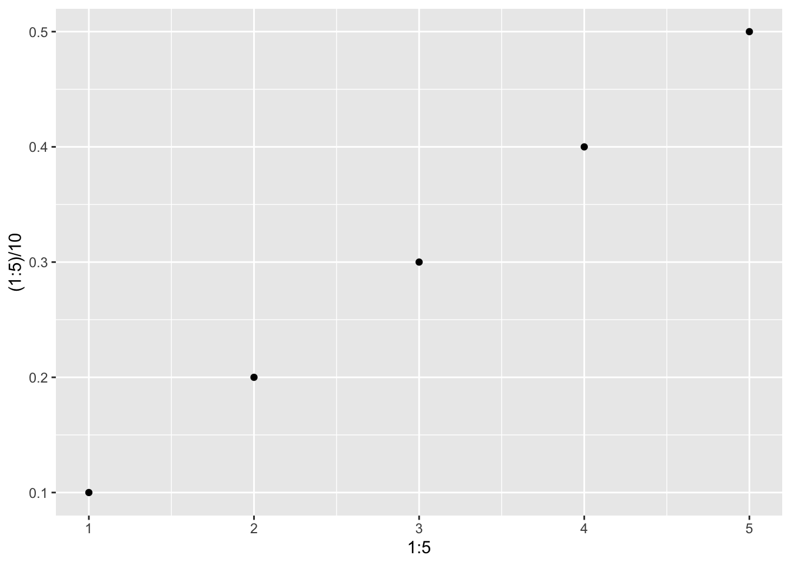
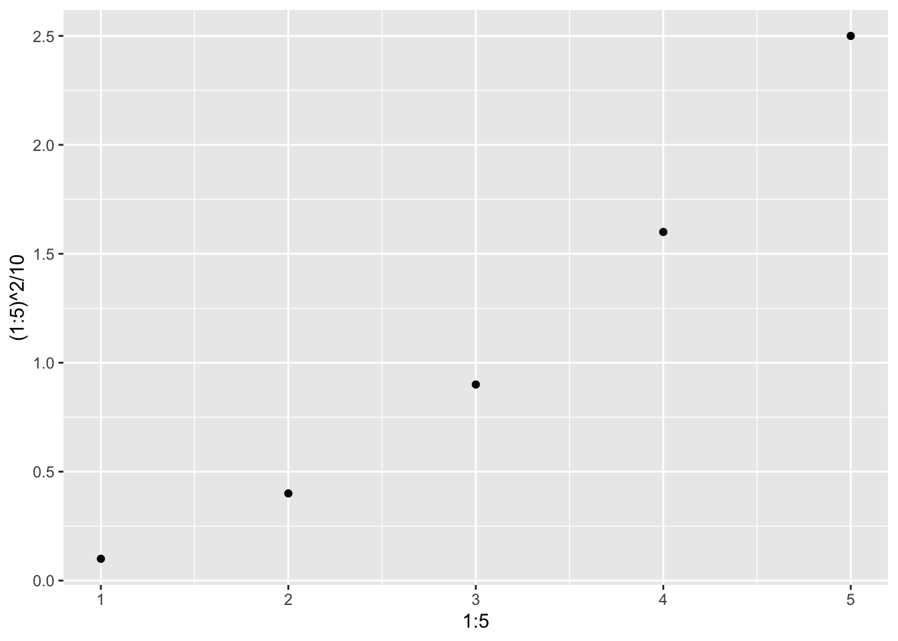
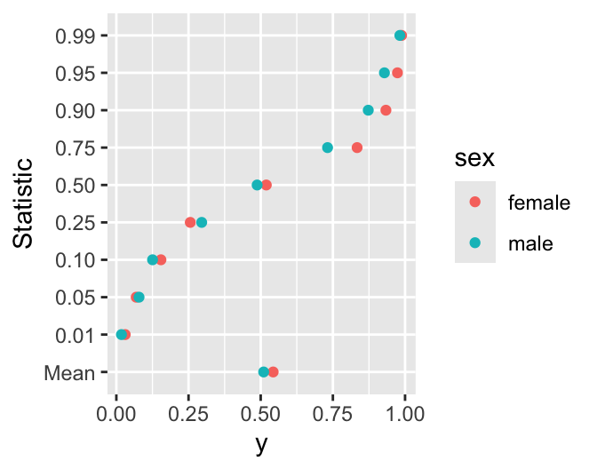

flowchart LR dt[data.table] sub[Subsetting Observations<br>and Variables] am[Adding/Modifying Variables] rec[Recode] --> hrec[R Expressions<br>factor<br>fcase<br>score.binary<br>table look-up] res[Reshape] --> lw[Long to Wide<br>dcast] & wl[Wide to Long<br>melt] flu[Fast Lookup<br>From Disk] --> dtf[data.table & fst]
10 Data Manipulation and Aggregation
10.1 data.table
The data.table package provides a concise, consistent syntax for managing simple and complex data manipulation tasks, and it is extremely efficient for large datasets. One of the best organized tutorials is this, and a cheatsheet for data transformation is here. Useful data.table vignettes are here. A master cheatsheet for data.table is here from which the general syntax below is taken, where DT represents a data table.
data.table FAQ DT[ i, j, by ] # + extra arguments
| | |
| | -------> grouped by what?
| -------> what to do?
---> on which rows?The following chart may help one to conceptualize the data.table framework. To enter into the environment of a data table means to be able to address its columns directly without having, for example, the DT prefix.
flowchart TD DTO["DT ["] E["Enter Environment<br>of DT<br>DT[rows,columns,by/on]"] DTO --> E R[Rows To Fetch<br>Or Change] C["Columns to Fetch<br><hr>Or Create/Redefine<br>with :="] OB["by (grouping)<br><hr>on (matching)"] E --> R & C & OB R & C & OB --> DTC["]"] --> L[Leave<br>Environment] L --> N["No :=<br><br>Print/Plot Output<br>or Assign Result To<br>New Data Table"] L --> IP[":=<br><br>Change DT in Place"]
For thinking logically about data manipulations and for efficient use of your time, it is best to thoroughly learn the data.table algebra. But you can also use a large language model as an assistant in developing data.table code as demonstrated in Section 13.8.
Data tables are also data frames so work on any method handling data frames. But data tables do not contain rownames.
Several data.table examples follow. I like to hold the current dataset in d to save typing. Some basic operations on data tables are:
d[2] # print 2nd row
d[2:4] # print rows 2,3,4
d[month == 'November']# fetch rows for November
d[month %like% 'mb'] # fetch rows with 'mb' in month
d[month %ilike% 'mb'] # fetch rows with 'mb' in month ignoring case
d[y > 2 & z > 3] # rows satisfying conditions
d[, age] # retrieve one variable
d[, .(age, gender)] # make a new table with two variables
i <- 2; d[, ..i] # get column 2
v <- 'age'; d[, ..v] # get variable named by contents of v
d[, (v)] # another way; these return data tables
d[.N] # last row
d[, .N, keyby=age] # number of rows for each age, sorted
d[1:10, bhr:pkhr] # first 10 rows, variables bhr - pkhr
d[1:10, !(bhr:pkhr)] # all but those variables
d[, 2:4] # get columns 2-4
d[, {...}] # run any number of lines of code in ...
# that reference variables inside ddata.table does many of its operations by reference to avoid the overhead of having multiple copies of data tables. This idea carries over to apparent copies of data tables. Here is an example.
require(Hmisc)
require(data.table)
knit_print <- knitr::normal_print # make knitr standard print output (not kable)
a <- data.table(x1=1:3, x2=letters[1:3])
a x1 x2
<int> <char>
1: 1 a
2: 2 b
3: 3 cb <- a # no copy; b is just a pointer to a
b[, x2 := toupper(x2)] # changes a
a x1 x2
<int> <char>
1: 1 A
2: 2 B
3: 3 Ca <- data.table(x1=1:3, x2=letters[1:3])
a2 <- copy(a) # fresh copy with its own memory space
a2[, x2 := toupper(x2)] # doesn't change a
a x1 x2
<int> <char>
1: 1 a
2: 2 b
3: 3 cYou can capitalize on data.table by reference operations when you need to perform a similar manipulation to a series of data tables. As in here just loop over a list() of the data tables.
a <- data.table(x=1:2, y=11:12)
b <- data.table(x=4:5, y=14:15)
for(w in list(a, b)) w[, y := 2 * y]
a x y
<int> <num>
1: 1 22
2: 2 24b x y
<int> <num>
1: 4 28
2: 5 30An element in a specify row and column of a data table is usually an atomic value such as an integer, logical, character, or real (double precision floating point) value. But data tables may also hold complex objects such as lists. Here is an example where a hierarchical structure is used to hold longitudinal data with varying number of observations per subject.
d <- data.table(id = c('a1', 'a2'), age = c(20, 30),
t = list(1:3, 3:4),
y = list(c(1.1,1.2,1.3), c(1.3,1.4)))
d id age t y
<char> <num> <list> <list>
1: a1 20 1,2,3 1.1,1.2,1.3
2: a2 30 3,4 1.3,1.4d[id == 'a1'] id age t y
<char> <num> <list> <list>
1: a1 20 1,2,3 1.1,1.2,1.3d[id == 'a1', t][[1]]
[1] 1 2 3d[id == 'a1', y][[1]]
[1] 1.1 1.2 1.3Try holding more complex objects: gplot2 plots.
require(ggplot2)
g1 <- ggplot(mapping=aes(x=1:5, y=(1:5)/10)) + geom_point()
g2 <- ggplot(mapping=aes(x=1:5, y=(1:5)^2/10)) + geom_point()
d <- data.table(state=c('AK', 'AL'), graph=list(g1, g2))
d
d[state == 'AK', graph]
d[state == 'AL', graph] state graph
<char> <list>
1: AK <ggplot2::ggplot>
2: AL <ggplot2::ggplot>[[1]]
[[1]]
To have data.table subset a data table using a subsetting expression that is a character string, use the following example.
This example was adapted from this.
criteria <- 'sex == "female" & age > 30'
d[.i, env = list(.i = str2lang(criteria))]10.1.1 Special Symbols in data.table Expressions
There are automatically-created special symbols you can use in data.table operations, as nicely summarized here and in the table below. These special symbols are also special in the sense that when you save them in the output, they are automatically given nice R variables names. For example, .N is stored as N.
| Symbol | Meaning |
|---|---|
.SD |
a data.table containing variables (other than those in by) for the current by-group |
.N |
number of rows in the current group (whole data table if no by) |
.I |
absolute row number in the data table, whether grouping or not |
.BY |
a list containing a 1-vector for each variable in by |
.GRP |
an integer group counter |
.NGRP |
overall number of by groups |
.EACHI |
used after by= to make each single row a group |
Here is an example showing the special variables’ values.
d <- data.table(state=.q(AL, AL, AK, AK, AK), y=c(3,2,5,7,1))
d[, .(.I, .N, .BY, .GRP, .NGRP), by=state] state I N BY GRP NGRP
<char> <int> <int> <list> <int> <int>
1: AL 1 2 AL 1 2
2: AL 2 2 AL 1 2
3: AK 3 3 AK 2 2
4: AK 4 3 AK 2 2
5: AK 5 3 AK 2 2To create a new variable containing the relative row number within a group, use the following.
d[, seqno := 1 : .N, by=state]
d state y seqno
<char> <num> <int>
1: AL 3 1
2: AL 2 2
3: AK 5 1
4: AK 7 2
5: AK 1 310.1.2 Keys
Keys play multiple roles in data.table:
- Fast indexing, e.g., if
idis the key, one can use the shortcut syntaxd['23f']to directly and instantly access data for a subject withid='23f' - Sorting the data for printing
- Speeding up joins (merges)
The speedup for merging data tables may not be significant for most data tables, and the on= option to d[...] is recommended instead of relying on keys that may be hidden earlier in the code, when merging. See the above link and Chapter 12 for more information.
Keys may be assigned using the key argument to the data.table function, or using the setkey and setkeyv functions from the data.table package. Here are some examples:
setkey(d, state, city) # sort d by city within state and define key
k <- c('state', 'city') # or .q(state, city)
setkeyv(d, k)
key(d) # list keys for d10.2 Analyzing Selected Variables and Subsets
options(prType='html')
getHdata(stressEcho)
d <- stressEcho
setDT(d)
d[, describe(age)]![image](data:image/png;base64,
iVBORw0KGgoAAAANSUhEUgAAAJcAAAANCAYAAACkYvxcAAAEDmlDQ1BrQ0dDb2xvclNwYWNlR2VuZXJpY1JHQgAAOI2NVV1oHFUUPpu5syskzoPUpqaSDv41lLRsUtGE2uj+ZbNt3CyTbLRBkMns3Z1pJjPj/KRpKT4UQRDBqOCT4P9bwSchaqvtiy2itFCiBIMo+ND6R6HSFwnruTOzu5O4a73L3PnmnO9+595z7t4LkLgsW5beJQIsGq4t5dPis8fmxMQ6dMF90A190C0rjpUqlSYBG+PCv9rt7yDG3tf2t/f/Z+uuUEcBiN2F2Kw4yiLiZQD+FcWyXYAEQfvICddi+AnEO2ycIOISw7UAVxieD/Cyz5mRMohfRSwoqoz+xNuIB+cj9loEB3Pw2448NaitKSLLRck2q5pOI9O9g/t/tkXda8Tbg0+PszB9FN8DuPaXKnKW4YcQn1Xk3HSIry5ps8UQ/2W5aQnxIwBdu7yFcgrxPsRjVXu8HOh0qao30cArp9SZZxDfg3h1wTzKxu5E/LUxX5wKdX5SnAzmDx4A4OIqLbB69yMesE1pKojLjVdoNsfyiPi45hZmAn3uLWdpOtfQOaVmikEs7ovj8hFWpz7EV6mel0L9Xy23FMYlPYZenAx0yDB1/PX6dledmQjikjkXCxqMJS9WtfFCyH9XtSekEF+2dH+P4tzITduTygGfv58a5VCTH5PtXD7EFZiNyUDBhHnsFTBgE0SQIA9pfFtgo6cKGuhooeilaKH41eDs38Ip+f4At1Rq/sjr6NEwQqb/I/DQqsLvaFUjvAx+eWirddAJZnAj1DFJL0mSg/gcIpPkMBkhoyCSJ8lTZIxk0TpKDjXHliJzZPO50dR5ASNSnzeLvIvod0HG/mdkmOC0z8VKnzcQ2M/Yz2vKldduXjp9bleLu0ZWn7vWc+l0JGcaai10yNrUnXLP/8Jf59ewX+c3Wgz+B34Df+vbVrc16zTMVgp9um9bxEfzPU5kPqUtVWxhs6OiWTVW+gIfywB9uXi7CGcGW/zk98k/kmvJ95IfJn/j3uQ+4c5zn3Kfcd+AyF3gLnJfcl9xH3OfR2rUee80a+6vo7EK5mmXUdyfQlrYLTwoZIU9wsPCZEtP6BWGhAlhL3p2N6sTjRdduwbHsG9kq32sgBepc+xurLPW4T9URpYGJ3ym4+8zA05u44QjST8ZIoVtu3qE7fWmdn5LPdqvgcZz8Ww8BWJ8X3w0PhQ/wnCDGd+LvlHs8dRy6bLLDuKMaZ20tZrqisPJ5ONiCq8yKhYM5cCgKOu66Lsc0aYOtZdo5QCwezI4wm9J/v0X23mlZXOfBjj8Jzv3WrY5D+CsA9D7aMs2gGfjve8ArD6mePZSeCfEYt8CONWDw8FXTxrPqx/r9Vt4biXeANh8vV7/+/16ffMD1N8AuKD/A/8leAvFY9bLAAAAOGVYSWZNTQAqAAAACAABh2kABAAAAAEAAAAaAAAAAAACoAIABAAAAAEAAACXoAMABAAAAAEAAAANAAAAABXzt1gAAAWiSURBVFgJ7ZlZSJVbFIDXtVNkkWVapoEaRPVQGDbogyFhTm+RPfQgKoXkk5QPEgX2GAUl9mKilg0ggaiROEASUT1omGSac4NiRYOWc+Vw+xbsw39Ox7zca9i5ueA/+//3Xmuvtfdaew37/PXmzZtpWYBfvgNPnz6VmJgYKSoqktjYWOXX3t4ua9askdWrV/9y/vPBwLZu3br54PvH8fx+iHXN3t7eYvZ89+7dcuDAAVm1apUsXbpUTpw44bAvX79+lfv370tUVJRDv7t8eLiLoPMp57NnzyQsLEw+fvw4p2J8+fJFeO7cuSO1tbWSm5srhw8ftvO4ffu27Nu3T54/f27vc6eXBeP6B9pqa2uT+vp6ef369azY3d3dcu/evRnxJicnBY9VU1PzA05dXZ3cvXtXysvLJSIiQr59+6Y48N22bZu0trb+QPM7dywY1xxr5+zZs5KSkiJlZWWyfft2mZ52TGnxVI8ePZKWlpYZOTc3N8vDhw9lampKcd6+fSv0dXR0yNatW6WqqkrzNzzd0aNHJTMzc8a55nPANp/M/w+8yYfi4+Nl165d4uHhIXgmHrzdkydP5MOHD1JSUqLj/3W94+PjapQY2ePHj2Xz5s3KgzzOwMuXL+XBgweSmJhouuattbEBfyrgGTCI2QCFAXgbqr39+/eLl5eX9lEFkpDfvHlT5/L39xcScZPAX758WRP18+fPK/6rV6+0JdQR9jC+kZERmZiYkP7+fgdag2taI0dfX5/iG9pFixZJamqqIEtoaKjmboRRAFmKi4vl4MGDsnz5cu2rqKiQLVu2yMaNG/W7qalJ3r9/P+eFgy0kJEQZ/Ek/eIAlS5YIhnDu3DlJTk7+6fLJowBoLly4IHv27NGHvsWLF4uPj48aCUrm3czNeGBgII0EBQU5tAEBAUrr6+urhujp6alXElZaZ5rg4GCdY/369WKz2QRaDAZDHxsbUxn8/PwUx+iVXDE7O1uvP6g8Dx06JBg6a05ISFBcQnljY6NkZGTo91z9zH5s54rTL5rnzJkzLvMXQhMewQqfP3/WpHzlypVanb17985lkk5YuXTpkpIODg7apzD5Ex7P2m9H+A1fjMzIy1UHXos+04/Izt/WZbBn/xbcOudCySdPntQchyqLHGRgYEBDATlPaWmpcI0AcGr37t0rlZWVOk5IMfDp0ydZtmyZvTq7fv26KgHvcPz4cSG0WQHDxXvgEdwFjDGZ1pXcrIu9wPsC7B3hFe+3Y8cOVyQ/7Ztz40JpuHgT311xJ4cwLp9x8o+1a9eqq3eFb/qomrKystStr1ixwuH04eojIyN1rtHRUd0U7qXIJwoLCzWfYPOGhobMdPaWMBcdHS0vXrxQQzWXnORAw8PDmt/Ykb+/kB/Rz7g7Q15enuDFDXBYiATosLe3Vw2NA2xd5+nTp3UvqVpJCdDDTOAQFkkYyUcM4AVQKJd8lLsop7Oz0ww7tCgG2ri4ODl27JjDmPWDkEPuQLVD3O/q6lKPk5OTo4aB+2YxhKzq6mo5deqUKhO8hoYGyc/P1wopKSnJ5eWi88lE9osXL2pOYpXD+o7rtz7WMXd9xyj4e+lnUFBQIDdu3LCjmD3gGmXDhg0aBRhE71zuch2CAd66dUuLmrS0NDVAihd0bwoOM6EN4zFAEggBoQDgHa9CBYIQhALGCDmmWjK0uM/09HRlRuVhndfg0Pb09OgnxnXt2jW9UMQLICBl/c6dO9W4cM+EOS4UKbXJFzhpAPwJXeHh4fqNN8KbkNRyj0SFhPdiU0xuxHwABwYw39CCBz60KMXQGi9ncJ1bKy08qTxnonXmi1yGr6FFftYxG19okZOcElrkdqalqj1y5IhcvXpV12v4W2mpVjEKwr/xxhxOvBbzGx2isytXrsimTZvsfJmPCMU9G0bM/6XkqVaD/hur2poqYSIbSAAAAABJRU5ErkJggg==)
| n | missing | distinct | Info | Mean | pMedian | Gmd | .05 | .10 | .25 | .50 | .75 | .90 | .95 |
|---|---|---|---|---|---|---|---|---|---|---|---|---|---|
| 558 | 0 | 62 | 0.999 | 67.34 | 68 | 13.41 | 46.85 | 51.00 | 60.00 | 69.00 | 75.00 | 82.00 | 85.00 |
d[, describe(~ age + gender)]age + gender
2 Variables 558 Observations
2 Variables 558 Observations
age: Age years
| n | missing | distinct | Info | Mean | pMedian | Gmd | .05 | .10 | .25 | .50 | .75 | .90 | .95 |
|---|---|---|---|---|---|---|---|---|---|---|---|---|---|
| 558 | 0 | 62 | 0.999 | 67.34 | 68 | 13.41 | 46.85 | 51.00 | 60.00 | 69.00 | 75.00 | 82.00 | 85.00 |
gender
| n | missing | distinct |
|---|---|---|
| 558 | 0 | 2 |
Value male female Frequency 220 338 Proportion 0.394 0.606
d[gender == 'female', describe(age)] # analyze age for females![image](data:image/png;base64,
iVBORw0KGgoAAAANSUhEUgAAAJcAAAANCAYAAACkYvxcAAAEDmlDQ1BrQ0dDb2xvclNwYWNlR2VuZXJpY1JHQgAAOI2NVV1oHFUUPpu5syskzoPUpqaSDv41lLRsUtGE2uj+ZbNt3CyTbLRBkMns3Z1pJjPj/KRpKT4UQRDBqOCT4P9bwSchaqvtiy2itFCiBIMo+ND6R6HSFwnruTOzu5O4a73L3PnmnO9+595z7t4LkLgsW5beJQIsGq4t5dPis8fmxMQ6dMF90A190C0rjpUqlSYBG+PCv9rt7yDG3tf2t/f/Z+uuUEcBiN2F2Kw4yiLiZQD+FcWyXYAEQfvICddi+AnEO2ycIOISw7UAVxieD/Cyz5mRMohfRSwoqoz+xNuIB+cj9loEB3Pw2448NaitKSLLRck2q5pOI9O9g/t/tkXda8Tbg0+PszB9FN8DuPaXKnKW4YcQn1Xk3HSIry5ps8UQ/2W5aQnxIwBdu7yFcgrxPsRjVXu8HOh0qao30cArp9SZZxDfg3h1wTzKxu5E/LUxX5wKdX5SnAzmDx4A4OIqLbB69yMesE1pKojLjVdoNsfyiPi45hZmAn3uLWdpOtfQOaVmikEs7ovj8hFWpz7EV6mel0L9Xy23FMYlPYZenAx0yDB1/PX6dledmQjikjkXCxqMJS9WtfFCyH9XtSekEF+2dH+P4tzITduTygGfv58a5VCTH5PtXD7EFZiNyUDBhHnsFTBgE0SQIA9pfFtgo6cKGuhooeilaKH41eDs38Ip+f4At1Rq/sjr6NEwQqb/I/DQqsLvaFUjvAx+eWirddAJZnAj1DFJL0mSg/gcIpPkMBkhoyCSJ8lTZIxk0TpKDjXHliJzZPO50dR5ASNSnzeLvIvod0HG/mdkmOC0z8VKnzcQ2M/Yz2vKldduXjp9bleLu0ZWn7vWc+l0JGcaai10yNrUnXLP/8Jf59ewX+c3Wgz+B34Df+vbVrc16zTMVgp9um9bxEfzPU5kPqUtVWxhs6OiWTVW+gIfywB9uXi7CGcGW/zk98k/kmvJ95IfJn/j3uQ+4c5zn3Kfcd+AyF3gLnJfcl9xH3OfR2rUee80a+6vo7EK5mmXUdyfQlrYLTwoZIU9wsPCZEtP6BWGhAlhL3p2N6sTjRdduwbHsG9kq32sgBepc+xurLPW4T9URpYGJ3ym4+8zA05u44QjST8ZIoVtu3qE7fWmdn5LPdqvgcZz8Ww8BWJ8X3w0PhQ/wnCDGd+LvlHs8dRy6bLLDuKMaZ20tZrqisPJ5ONiCq8yKhYM5cCgKOu66Lsc0aYOtZdo5QCwezI4wm9J/v0X23mlZXOfBjj8Jzv3WrY5D+CsA9D7aMs2gGfjve8ArD6mePZSeCfEYt8CONWDw8FXTxrPqx/r9Vt4biXeANh8vV7/+/16ffMD1N8AuKD/A/8leAvFY9bLAAAAOGVYSWZNTQAqAAAACAABh2kABAAAAAEAAAAaAAAAAAACoAIABAAAAAEAAACXoAMABAAAAAEAAAANAAAAABXzt1gAAAXDSURBVFgJ7VlZSFVdFF6/3syBhIpQRJEKB/AhNEN70Sd9CEQQQelBEVRKfPBBUUTRLBE1LAVRQQQtBAMxK8GhQRFLixJJch5zSHMoh7RJ+7/Fvw5Hr/d2vb/wa78L7t3n7P2tffba+ztrr7XPX9PT05t0KHs+A1++fKGgoCC6ceMGeXp6buk/Ly+PcnNzaXJykkxMTGhhYYHc3NwoMzOTiouLydvbmwoKCrboHMQbja2t7UEc938y5rm5OXJycqLa2lry8fHRO4aJiQnq6uqimZkZ2j7Hx44dY13Ug1xHjhzhe2tra9JoNGRhYaGl09vbS15eXtTR0UGurq56n71fGk32y0AOwjgWFxfp06dPBOLshWxubtLLly937Gp2dpaGh4dpbW1NIenS0hJ9+PBBCz8/P0+Dg4P09etX6uzs1GrfbcX79+9pampqt2pa+ENyaU2JYRWPHz8mLMK/kebmZvZG3d3dWt3Ex8dTcHAwlZaW0vnz5+nbt29aGKlITk6mgIAAunPnDmNBQkMFBK+qqmISi05ERARFR0fLrdHlIbmMnLqQkBDKz883SLuiooJev35Nz549o/v37ys68DQQKZWGf+rW19e57efPn4SfCJ47MjIitwSc/EAWNRELCwupv79fwW6/ePfuHYWGhlJTU5PSJM9VKoy8OCSXkRO3fcH1dZOUlMQe6Pbt2xzg68P+rg1EjIuLo+rq6t9BCUSLjY2le/fu6cQKaaXUCTSiQYOg8/8kdXV17EWw5SAjgxc4evSoQVMwNjbGOJRYjI8fP3I8hMqWlhZC3zExMZz1JSYmMhZbJzwJkgHEa6urq0rchJgKMjQ0xCViOZAH2SN04EEk9hEsYisIMs2wsDBycHBQ8BILYps9fvw4bWxsMPbvEwFlnFyh+hOvBk8oXMAYf/z4odyr4Lu61Jw7d25XCvsRnJ2dTc+fP+csDgtibm6uc5hFRUWMvXTpErW3t3OmFhgYSDU1NeTu7r5Fr6SkhCorK5k4aLC0tOR2R0dHMjU1pVOnTpHMH+IWxFBXrlyhV69eETI/CBYf2eDJkyeZOCsrK0omeObMGcacPXuWS3t7eyb6iRMnmFiww87Ojtu2Y1Hf2NjIOODNzMwI+hAQCzY9evSI75GVyjjhzb5//85zEBkZSXfv3mXM6dOnFYyVlRVnrKLDACP+/ohtEXHD27dv2f1jwXHGNDAwYNB0wKPAE42OjnKADs+B7AuZIdJ/eZt1dQYc8PtJkFHCpvHxca1hpaWl0YULF9hbwmMuLy9rYfRVQAcEFdFn/x9BLjEU6Ts8w5s3b8jZ2ZlaW1upra2NtyPB6Cvxpt68eZMuX75MyJhEQDh1wCv1KIED/qAI5gi/neTFixd6XxRsxTjne/DggaKuz36DyIVYAVuE7OFKzztc4E3AKbMhASI8DLYpuOm9FPQLAdF8fX15PIb0j1hD/RMdTKa/v/+O51uCF+xBLv38/LZ8GUA8pk4cMK/wWrBZRJ/9W8iF2AVvvQhiklu3blF9fT3HEur0VzBSItWG/pMnT+jq1avU09MjTTpLeBYEwDj4S0lJ4YNAkPjp06fU0NBAZWVl3E96ejp9/vyZEhISuIRrx5aFduB0CSYCJAd5cQYkMYguvK56IT+C3IMqsP/hw4d6hw87xVYAsRZRUVGcPCBBUbfhExb4ISLrL/coNeoT39TUVM5OJIjE4iFQzcrKYh18ykCwt5OUl5fzYOCJIHC96r530pFYBZkQvquhb+hfvHiRD/X6+voI50nXr18nFxcX3rI8PDwoIyOD3yCMDfUIfLHwcniIbAsiJbwptjsbGxsOpkE4kFWNQewAMsLbIVPDZxm8lfDW8NxqLO5Rj3ZsmcBDD/roR43Fc/A8vPVINrBAEudsx2L8sAOn8sCqbRKslOgD7cBB1FixW0pj7ZdnwHPn5OQQ5h4C+69du8ZrI/Zj/bFjhYeHMwZ/vwC9GsGuOZwr3QAAAABJRU5ErkJggg==)
| n | missing | distinct | Info | Mean | pMedian | Gmd | .05 | .10 | .25 | .50 | .75 | .90 | .95 |
|---|---|---|---|---|---|---|---|---|---|---|---|---|---|
| 338 | 0 | 58 | 0.999 | 67.01 | 67.5 | 13.74 | 47.00 | 50.70 | 59.25 | 68.00 | 76.00 | 83.00 | 85.00 |
describe(d[, .(age, gender)], 'Age and Gender Stats')Age and Gender Stats
2 Variables 558 Observations
2 Variables 558 Observations
age: Age years
| n | missing | distinct | Info | Mean | pMedian | Gmd | .05 | .10 | .25 | .50 | .75 | .90 | .95 |
|---|---|---|---|---|---|---|---|---|---|---|---|---|---|
| 558 | 0 | 62 | 0.999 | 67.34 | 68 | 13.41 | 46.85 | 51.00 | 60.00 | 69.00 | 75.00 | 82.00 | 85.00 |
gender
| n | missing | distinct |
|---|---|---|
| 558 | 0 | 2 |
Value male female Frequency 220 338 Proportion 0.394 0.606
# Separate analysis by female, male. Use keyby instead of by to sort the usual way.
# To makek this work we have to use plain text rendering of describe
options(prType='plain')
d[, print(describe(age, descript=gender)), by=gender]male : Age [years]
n missing distinct Info Mean pMedian Gmd .05
220 0 51 0.999 67.86 68.5 12.91 45.95
.10 .25 .50 .75 .90 .95
51.00 62.00 69.00 75.00 81.00 86.00
lowest : 30 34 38 40 43, highest: 88 89 91 92 93
female : Age [years]
n missing distinct Info Mean pMedian Gmd .05
338 0 58 0.999 67.01 67.5 13.74 47.00
.10 .25 .50 .75 .90 .95
50.70 59.25 68.00 76.00 83.00 85.00
lowest : 26 28 29 33 34, highest: 87 88 89 90 91Empty data.table (0 rows and 1 cols): genderLet’s use data.table to do a stratified analysis by running a function g over gender groups and having g produce a simple blank character string, where the real work done by g is the side effect of adding to an ever-growing list named tabs. This allows accumulation of complex objects, here html containing a gt table including javascript code to produce interactive sparklines representing a spike histogram for a continuous variable age. The side effect is done by having g use <<- to store values in the global environment, just just in the local g environment.
options(prType='html')
sparkline::sparkline(0)
tabs <- list()
g <- function(x, name) {
p <- print(x, 'cont')
tabs <<- c(tabs, structure(list(p), names=as.character(name)))
''}
d[, g(describe(age), name=gender), by=gender]- 1
-
Load
javascriptjQuerydependencies for interactive sparklines drawn by thesparklinepackage - 2
-
Use the special output option for
describefor continuous variables, which makes a table with thegtpackage containing sparklines - 3
-
structure(z, names=...)addes thenamesattribute tozenclosed in alist;c(...)combines the new list with the current listtabs - 4
-
Current by-group
gendername is passed togto use in naming the list elements
gender V1
<fctr> <char>
1: male
2: female The qreport maketabs function relies on results='asis' being in the chunk header, and uses Quarto features to make a separate tab for each by-group, with an initial blank tab so that at the beginning no output is shown, when initblank=TRUE. But as of 2024-07-27, knitr throws an error when rendering this type of output through maketabs. If you are interested in working on a data.table solution start with the following.
g <- function(x, by) list(print(describe(x, descript=by), 'cont'))
w <- d[, .(des=g(age, gender)), by=gender]- 1
-
Enclose the html
printresult in alist()so thatdata.tablewill keep it intact. - 2
-
Row 1 of
wis for males, row 2 for females. Thedescolumn contains the twodescribehtmlprintoutputs.
This creates a 2\(\times\) 2 data table w that you can convert to a list() with two elements with a little work.
Here is a non-data.table solution using built-in R functions split and lapply whereby the dataset is split into two lists by gender.
s <- split(d, d$gender)
w <- lapply(s, function(x) print(describe(~ age, data=x), 'cont'))- 1
-
Make a
listwith two elements namedmaleandfemale. - 2
-
For each of the two elements in the
listrunprint(describe(...))to make a new two-element list containing html.
qreport::maketabs(w, initblank=TRUE) # not runThis can also be done by creating a function that both subsets the data and runs the analysis.
Hover over the spike histogram to see data values, frequencies, and relative frequencies.
g <- function(s) print(describe(~ age, data=d[gender == s]), 'cont')
levs <- d[, levels(gender)]
w <- lapply(levs, g)
names(w) <- levs
qreport::maketabs(w, initblank=TRUE)age Descriptives |
|||||||||||
| 1 Continous Variables of 1 Variables, 220 Observations | |||||||||||
| Variable | Label | Units | n | Missing | Distinct | Info | Mean | pMedian | Gini |Δ| | Quantiles .05 .10 .25 .50 .75 .90 .95 |
|
|---|---|---|---|---|---|---|---|---|---|---|---|
| age | Age | years | 220 | 0 | 51 | 0.999 | 67.86 | 68.5 | 12.91 | 45.95 51.00 62.00 69.00 75.00 81.00 86.00 | |
age Descriptives |
|||||||||||
| 1 Continous Variables of 1 Variables, 338 Observations | |||||||||||
| Variable | Label | Units | n | Missing | Distinct | Info | Mean | pMedian | Gini |Δ| | Quantiles .05 .10 .25 .50 .75 .90 .95 |
|
|---|---|---|---|---|---|---|---|---|---|---|---|
| age | Age | years | 338 | 0 | 58 | 0.999 | 67.01 | 67.5 | 13.74 | 47.00 50.70 59.25 68.00 76.00 83.00 85.00 | |
Get back to something simple: compute the mean and median age by gender.
d[, .(Mean=mean(age), Median=median(age)), by=gender] gender Mean Median
<fctr> <labelled> <labelled>
1: male 67.85909 69
2: female 67.00888 68# To create a new subset
w <- d[gender == 'female' & age < 70, ]10.3 Adding Aggregate Statistics to Raw Data
Suppose one wished to compute a summary statistic stratified by groups, but the summary statistic is to be duplicated for all the raw data observations in each group. This kind of operation is usually done in two steps: (1) compute summary statistics and (2) merge them with the original dataset. With data.table it is easy to do this in one step.
This solution to the problem was provided here
Let’s create some data.
d <- data.table(id = 1:10,
clinic = .q(a, a, b, b, b, c, c, d, d, d),
sex = .q(f, m, m, f, f, m, m, f, f, f),
sick = c(1, 0, 0, 0, 0, 1, 0, 1, 0, 1))
d id clinic sex sick
<int> <char> <char> <num>
1: 1 a f 1
2: 2 a m 0
3: 3 b m 0
4: 4 b f 0
5: 5 b f 0
6: 6 c m 1
7: 7 c m 0
8: 8 d f 1
9: 9 d f 0
10: 10 d f 1Let’s first add something simple to the data table: the number of persons in the same clinic as the clinic of the current row, counting the current row.
d[, N := .N, by=.(clinic)]
d id clinic sex sick N
<int> <char> <char> <num> <int>
1: 1 a f 1 2
2: 2 a m 0 2
3: 3 b m 0 3
4: 4 b f 0 3
5: 5 b f 0 3
6: 6 c m 1 2
7: 7 c m 0 2
8: 8 d f 1 3
9: 9 d f 0 3
10: 10 d f 1 3Next compute the proportion sick by clinic but smear it over all observations within clinic. Add one complication: compute proportions only on females. Note that a proportion is just a mean of 0/1 values. Define our own mean function to handle the case where there are no females in a clinic. The function returns NA in that case.
The regular
mean function returns NaN when the denominator is zero.mn <- function(x) {
x <- x[! is.na(x)]
if(! length(x)) NA_real_ else mean(x)
}
d[, psick := mn(sick[sex == 'f']), by=.(clinic)]
d- 1
-
data.tableneeds all groups to have the same mode for computed values such as means. There areNAvalues for different variable modes. We are using ordinary numeric floating point (real) double precision (15 digits of precision) values.
id clinic sex sick N psick
<int> <char> <char> <num> <int> <num>
1: 1 a f 1 2 1.0000000
2: 2 a m 0 2 1.0000000
3: 3 b m 0 3 0.0000000
4: 4 b f 0 3 0.0000000
5: 5 b f 0 3 0.0000000
6: 6 c m 1 2 NA
7: 7 c m 0 2 NA
8: 8 d f 1 3 0.6666667
9: 9 d f 0 3 0.6666667
10: 10 d f 1 3 0.666666710.4 Adding, Changing, and Removing Variables
data.table provides a series of set* functions that can modify a data table by reference, i.e., in place, therefore increasing speed and minimizing memory usage. One of these functions is setcolorder which will reorder columns into a user-specified order without moving any data. Here are some examples. Note that if the complete vector of names is not specified, setcolorder just moves the named varibles to the left.
setcolorder(mydata, c('id', 'age', 'sex'))
setcolorder(mydata, .q(id, age, sex ))
setcolorder(mydata, 'id') # id variable becomes leftmost variable
# Order variables by increasing number of NAs present
setcolorder(mydata, order(sapply(mydata, function(x) sum(is.na(x)))))With data.table you can create a new data table with added variables, or you can add or redefine variables in a data table in place. The latter has major speed and memory efficiency implications when processing massive data tables. Here d refers to a different data table from the one used above.
# Rename a variable
setnames(d, c('gender', 'height'),
c( 'sex', 'ht'))
# Easier:
setnames(d, .q(gender, height),
.q( sex, ht))
# Or
ren <- .q(gender=sex, height=ht)
setnames(d, names(ren), ren)
# Or
rename <- function(x, n) setnames(x, names(n), n)
rename(d, .q(gender=sex, height=ht))
# For all variables having baseline_ at the start of their names, remove it
n <- names(d)
setnames(d, n, sub('^baseline_', '', n)) # ^ = at start; use $ for at end
# For all variables having baseline_ at the start of their names, remove it
# and add Baseline to start of variable label
n <- names(d)
n <- n[grepl('^baseline_', n)]
ren <- sub('^baseline_', '', n); names(ren) <- n
# Fetch vector of labels for variables whose names start with baseline_
labs <- sapply(d, label)[n] # label() result is "" if no label
labs <- paste('Baseline', labs)
d <- updata(d, rename=ren, labels=labs)
# Change all names to lower case
n <- names(d)
setnames(d, n, tolower(n))
# Abbreviate names of all variables longer than 10 characters
# abbreviate() will ensure that all names are unique
n <- names(d)
setnames(d, n, abbreviate(n, minlength=10))
# For any variables having [...] or (...) in their labels, assume these
# are units of measurement and move them from the label to the units
# attribute
d <- upData(d, moveUnits=TRUE)
# Compute two new variables, storing result in a new data table
z <- d[, .(bmi=wt / ht ^ 2, bsa=0.016667 * sqrt(wt * ht))]
# Add one new variable in place
d[, bmi := wt / ht ^ 2]
# Add two new variables in place
d[, `:=`(bmi = wt / ht ^ 2, bsa=0.016667 * sqrt(wt * ht))]
d[, .q(bmi, bsa) := .(wt / ht ^ 2, 0.016667 * sqrt(wt * ht))]
# Add two new variables whose names are specified in a vector v
v <- .q(var1, var2) # or c('var1', 'var2')
d[, (v) := .(x1 * x2, sqrt(x2))]
# Add a new variable computed from a function of several
# variables whose names are in character vector v
d[, newvar := do.call('min', .SD), .SDcols=v]
# Add a new variable that is the number of non-missing variables with names = v
g <- function(x) rowSums(! is.na(as.matrix(x)))
d[, measured := g(.SD), .SDcols=v]
# Change all variables named in v by converting them to integers
d[, (v) := lapply(.SD, as.integer), .SDcols=v]
# Compute something requiring a different formula for different types
# of observations
d[, htAdj := ifelse(sex == 'male', ht, ht * 1.07)] # better" use fifelse in data.table
d[, htAdj := ht * ifelse(sex == 'male', 1, 1.07)]
d[, htAdj := (sex == 'male') * ht + (sex == 'female') * ht * 1.07]
d[sex == 'male', htAdj := ht]
d[sex == 'female', htAdj := ht * 1.07]
d[, htAdj := fcase(sex == 'male', ht, # fcase is in dta.table
sex == 'female', ht * 1.07)]
d[, htAdj := fcase(sex = 'female', ht * 1.07, default = ht)]
# Add label & optional units (better to use upData which works on data tables)
adlab <- function(x, lab, un='') {
label(x) <- lab
if(un != '') units(x) <- un
x
}
d[, maxhr := adlab(maxhr, 'Maximum Heart Rate', '/m')]
# Delete a variable (or use upData)
d[, bsa := NULL]
# Delete two variables
d[, `:=`(bsa=NULL, bmi=NULL)]
d[, .q(bsa, bmi) := NULL]
# Delete two variables whose names are in character vector v
d[, (v) := NULL]
# or set(d, j=v, value=NULL)
# Delete all variables whose names end in _days
d[, grep('_days$', colnames(d)) := NULL]
# or:
# v <- colnames(d)[grep('_days$', colnames(d))]
# d[, (v) := NULL]
# Delete a variable, but not in place (e.g, just print narrower table)
d[, ! 'bsa']
# Make a new data table that excludes columns containing xx in names
d2 <- d[, .SD, .SDcols= ! patterns('xx')]See this for a comprehensive description of ways to remove columns using data.table.
Beginning with version 1.14.7 of data.table there is a new alias for := that is especially useful when assigning or deleting multiple variables:
d[, let(bmi = wt / ht ^ 2, bsa=0.016667 * sqrt(wt * ht))]10.4.1 Adding Variables Depending on Other Variables Being Added
When adding a series of variables to a data table using := or let, the new variables may not depend on other new variables. The following example shows how to easily get around that problem.
See here for related ideas.
d <- data.table(x=1:2, y=11:12)
d[, .q(u, v, w) := {
u <- 2 * x
v <- y + u
w <- u + v
.(u, v, w)
}]
d x y u v w
<int> <int> <num> <num> <num>
1: 1 11 2 13 15
2: 2 12 4 16 20{} in R allows you to have multi-line expressions that end in one value (here a list with three elements), as if only that value were supplied to data.table. The <- assignments (= may have been used instead) create temporary variables.
This example is easier with the Hmisc upData function.
Add
print=FALSE to upData() to suppress the output about changes to the dataset.d <- data.table(x=1:2, y=11:12)
upData(d, u = 2 * x, v = y + u, w = u + v)Input object size: 1352 bytes; 2 variables 2 observations
Added variable u
Added variable v
Added variable w
New object size: 1752 bytes; 5 variables 2 observations x y u v w
<int> <int> <int> <int> <int>
1: 1 11 2 13 15
2: 2 12 4 16 2010.5 Recoding Variables
# Group levels a1, a2 as a & b1,b2,b3 as b
d[, x := factor(x, .q(a1,a2,b1,b2,b3),
.q( a, a, b, b, b))]
# Regroup an existing factor variable
levels(d$x) <- list(a=.q(a1,a2), b=.q(b1,b2,b3))
# or
d <- upData(d, levels=list(x=list(a=.q(a1,a2), b=.q(b1,b2,b3))))
# Combine all categories with frequency < 20 in to "OTHER"
x <- combine.levels(x, m=20)
# Instead of naming the catch-all category "OTHER" name it with a
# comma-separated concatenation of all levels being combined and
# use a relative threshold of n/20
x <- combine.levels(x, minlev=0.05, plevels=TRUE)
# For a categorical variable that is ordered, only allow categories
# to be combined that are adjacent. It makes sense for x to be
# a factor and not character, because character variables have no
# inherent ordering of levels. If x is ordered() you can omit ord=TRUE.
x <- combine.levels(x, m=10, ord=TRUE)
# Manipulate character strings
d[, x := substring(x, 1, 1)] # replace x with first character of levels
# or
levels(d$x) <- substring(levels(d$x), 1, 1)
# Recode a numeric variable with values 0, 1, 2, 3, 4 to 0, 1, 1, 1, 2
d[, x := 1 * (x %in% 1:3) + 2 * (x == 4)]
d[, x := fcase(x %in% 1:3, 1, # fcase is in data.table
x == 4, 2)]
d[, x := fcase(x %between% c(1,3), 1,
x == 4, 2)] # %between% is in data.table
# Recode a series of conditions to a factor variable whose value is taken
# from the last condition that is TRUE using Hmisc::score.binary
# Result is a factor variable unless you add retfactor=FALSE
d[, x := score.binary(x1 == 'symptomatic',
x2 %in% .q(stroke, MI),
death)]
# Same but code with numeric points
d[, x := score.binary(x1 == 'symptomatic',
x2 %in% .q(stroke, MI),
death, # TRUE/FALSE or 1/0 variable
points=c(1,2,10))]
# Or just reverse the conditions and use fcase which stops at the first
# condition met
d[, x := fcase(death, 'death', # takes precedence
x2 %in% .q(stroke, MI), 'stroke/MI', # takes next precedence
x1 == 'symptomatic', 'symptomatic',
default = 'none')]
# Recode from one set of character strings to another using named vector
# A named vector can be subscripted with character strings as well as integers
states <- c(AL='Alabama', AK='Alaska', AZ='Arizona', ...)
# Could also do:
# states <- .q(AL=Alabama, AK=Alaska, AZ=Arizona, ..., NM='New Mexico', ...)
# or do a merge for table lookup (see later)
d[, State := states[state]]
# states are unique, state can have duplicates and all are recoded
d[, State := fcase(state == 'AL', 'Alabama', state='AK', 'Alaska', ...)]
# Recode from integers 1, 2, ..., to character strings
labs <- .q(elephant, giraffe, dog, cat)
d[, x := labs[x]]
# Recode from character strings to integers
d[, x := match(x, labs)]
d[, x := fcase(x == 'elephant', 1,
x == 'giraffe', 2,
x == 'dog', 3,
x == 'cat', 4)]As an example of more complex hierarchical recoding let’s define codes in a nested list.
a <- list(plant =
list(vegetable = .q(spinach, lettuce, potato),
fruit = .q(apple, orange, banana, pear)),
animal =
list(domestic = .q(dog, cat, horse),
wild = .q(giraffe, elephant, lion, tiger)) )
a$plant
$plant$vegetable
[1] "spinach" "lettuce" "potato"
$plant$fruit
[1] "apple" "orange" "banana" "pear"
$animal
$animal$domestic
[1] "dog" "cat" "horse"
$animal$wild
[1] "giraffe" "elephant" "lion" "tiger" a <- unlist(a)
aplant.vegetable1 plant.vegetable2 plant.vegetable3 plant.fruit1
"spinach" "lettuce" "potato" "apple"
plant.fruit2 plant.fruit3 plant.fruit4 animal.domestic1
"orange" "banana" "pear" "dog"
animal.domestic2 animal.domestic3 animal.wild1 animal.wild2
"cat" "horse" "giraffe" "elephant"
animal.wild3 animal.wild4
"lion" "tiger" # Pick names of unlist'ed elements apart to define kingdom and type
n <- sub('[0-9]*$', '', names(a)) # remove sequence numbers from ends of names
# Names are of the form kingdom.type; split at .
s <- strsplit(n, '.', fixed=TRUE)
kingdom <- sapply(s, function(x) x[1])
type <- sapply(s, function(x) x[2])
# or: (note \\. is escaped . meaning not to use as wild card)
# .* = wild card: any number of characters
# kingdom <- sub('\\..*', '', n) # in xxx.yyy remove .yyy
# type <- sub('.*\\.', '', n) # in xxx.yyy remove xxx.
names(kingdom) <- names(type) <- a
w <- data.table(kingdom, type, item=a, key=c('kingdom', 'item'))
wKey: <kingdom, item>
kingdom type item
<char> <char> <char>
1: animal domestic cat
2: animal domestic dog
3: animal wild elephant
4: animal wild giraffe
5: animal domestic horse
6: animal wild lion
7: animal wild tiger
8: plant fruit apple
9: plant fruit banana
10: plant vegetable lettuce
11: plant fruit orange
12: plant fruit pear
13: plant vegetable potato
14: plant vegetable spinach# Example table lookups
cat(kingdom['dog'], ':', type['dog'], '\n')animal : domestic kingdom[.q(dog, cat, spinach)] dog cat spinach
"animal" "animal" "plant" type [.q(dog, cat, giraffe, spinach)] dog cat giraffe spinach
"domestic" "domestic" "wild" "vegetable" # But what if there is a plant named the same as an animal?
# Then look up on two keys
w[.('animal', 'lion'), type][1] "wild"10.5.1 Recoding From an Expression File
In a project involving hundreds of variables and a team of analysts and programmers, specification and debugging of code that computes derived variables can be hard to manage, and the programming required may be tedious. It is useful to separate derived variable computations from overall data processing code and to manage long lists of formulas in Github or other repositories. Properly constructed, the code inside such a file can be streamlined, easier to read, and easy to apply to data tables.
Consider the case where each derived variable involves only variables from one dataset. An R list object is a good structure for specification of formulas, new variable names, and labels. Consider this R structure for a single derived variable to be named newname. The Hmisc .q function is used to quote variable names in the drop option. The vector of variable names in drop specifies component variables to be dropped from the data table upon computation of newname. drop= is omitted if no variables are to be dropped. label= and/or units= are omitted if you don’t give newname a label or units of measurement.
list(newname=expression(an R expression of one or more variables),
label='label for newname', units='units of measurement',
drop=.q(var1, var2, var3))The expression to compute must be the first element of the list and it must be named with the new variable. An existing variable name may be used instead, resulting in transformation and replacement of that variable in the data table.
Here is an example in which body mass index is computed.
list(bmi = expression(703 * weight / height ^ 2),
label='Body Mass Index',
drop=.q(weight, height), units='Kg/m^2')The flexibility of R comes into play once you consider that complex derived variable expressions can use external functions that you store elsewhere.
For multiple derived variables these lists are stacked, and surrounded by an overall list that contains all these variable-specific lists. When dealing with multiple datasets, these overall lists can be combined into a mega list. An example of a Github file containing such specification is here, printed below. Ignore the updata object for now.
# Define any complex derivations or repetitively used code as functions here
# These functions may be called as needed from code inside lists inside
# the derv object below
# Example: (not very complex but you'll get the idea)
# myfun <- function(x1, x2) x1 > 3 | (x1 < 1 & x2 < 0)
# ...
# list(x = expression(myfun(x1, x2)))
# myfun is defined first, when this entire file is source()'d
derv <- list( # mega list for all datasets
# Derived variables for dataset A
A = list(
list(bmi = expression(703 * weight / height ^ 2),
label='Body Mass Index',
units='Kg/m^2')
),
# Derived variables for dataset B, and transformation of existing var z
B = list(
list(x = expression(x1 * x2 / x3),
label = 'X', drop=.q(x1, x2, x3)),
list(y = expression(y1 / y2),
label = 'Y', drop=.q(y1, y2)),
list(z = expression(z * 1000))
)
)
# Another approach using upData() instead of runDeriveExpr()
updata <- list(
# upData input for dataset A
A = list(
bmi = expression(703 * weight / height ^ 2),
labels = c(bmi='Body Mass Index'),
units = c('Kg/m^2')
),
B = list(
# upData input for dataset B
x = expression(x1 * x2 / x3),
y = expression(y1 / y2),
z = expression(z * 1000),
labels = .q(x=X, y=Y),
drop = .q(x1, x2, x3, y1, y2)
)
)
# To syntax-check code in this file, just source() it into any R session
# after running require(Hmisc) (to define .q if you use it)The following code reads the mega list, executing the code to create the needed definitions and storing the overall derivation information in object derv.
derv was the object name to which the mega list was assigned inside the external derivation file.source(file)
derv$A
$A[[1]]
$A[[1]]$bmi
expression(703 * weight/height^2)
$A[[1]]$label
[1] "Body Mass Index"
$A[[1]]$units
[1] "Kg/m^2"
$B
$B[[1]]
$B[[1]]$x
expression(x1 * x2/x3)
$B[[1]]$label
[1] "X"
$B[[1]]$drop
[1] "x1" "x2" "x3"
$B[[2]]
$B[[2]]$y
expression(y1/y2)
$B[[2]]$label
[1] "Y"
$B[[2]]$drop
[1] "y1" "y2"
$B[[3]]
$B[[3]]$z
expression(z * 1000)The qreport package has a function runDeriveExpr that runs the items in derv from a single dataset against that dataset using data.table to effect the specified changes. The input datasets must be data.tables. By default, runDeriveExpr prints to the console information about the changes. Let’s create data tables A and B to show how this works.
require(qreport) # defines runDeriveExpr
A <- data.table(id=1:2, height=c(70, 50), weight=c(200, 170))
A id height weight
<int> <num> <num>
1: 1 70 200
2: 2 50 170B <- data.table(id=1:2, x1=11:12, x2=21:22, x3=31:32,
y1=41:42, y2=51:52, z=1:2)
runDeriveExpr(A, derv$A)Derived variable bmi added with label unitscontents(A)Data frame:A
2 observations and 4 variables, maximum # NAs:0| Name | Labels | Units | Class | Storage |
|---|---|---|---|---|
| id | integer | |||
| height | double | |||
| weight | double | |||
| bmi | Body Mass Index | Kg/m^2 | numeric | double |
print(A) id height weight bmi
<int> <num> <num> <labelled>
1: 1 70 200 28.69388
2: 2 50 170 47.80400runDeriveExpr(B, derv$B)Derived variable x added with label; dropped variables x1, x2, x3
Derived variable y added with label; dropped variables y1, y2
Existing variable z changedcontents(B)Data frame:B
2 observations and 4 variables, maximum # NAs:0| Name | Labels | Class | Storage |
|---|---|---|---|
| id | integer | ||
| z | double | ||
| x | X | numeric | double |
| y | Y | numeric | double |
print(B) id z x y
<int> <num> <labelled> <labelled>
1: 1 1000 7.451613 0.8039216
2: 2 2000 8.250000 0.8076923Note that runDeriveExpr does the data table modifications in-place on its first argument, so one does not assign the result of the function to an object. If you want to keep the original data table intact, do something like Aorig <- copy(A) before running runDeriveExpr.
If one only needed to assign labels and units, this would best be done with the Hmisc upData function. upData can also be used to transform existing variables and to add new variables. An upData approach to the whole process involves defining the upData information as a list in the external file as was also done in testderived.r.
There is one small change to the usual
upData input: formulas must be enclosed in expression().# updata object was defined by source(file) above
A <- data.table(id=1:2, height=c(70, 50), weight=c(200, 170))
B <- data.table(id=1:2, x1=11:12, x2=21:22, x3=31:32,
y1=41:42, y2=51:52, z=1:2)
A <- do.call('upData', c(list(object=A), updata$A))Input object size: 1584 bytes; 3 variables 2 observations
Added variable bmi
New object size: 2216 bytes; 4 variables 2 observationsB <- do.call('upData', c(list(object=B), updata$B))Input object size: 2336 bytes; 7 variables 2 observations
Added variable x
Added variable y
Modified variable z
Dropped variables x1,x2,x3,y1,y2
New object size: 2792 bytes; 4 variables 2 observationsA id height weight bmi
<int> <int> <int> <labelled>
1: 1 70 200 28.69388
2: 2 50 170 47.80400B id z x y
<int> <int> <labelled> <labelled>
1: 1 1000 7.451613 0.8039216
2: 2 2000 8.250000 0.8076923Note that any arguments to upData may appear in the lists that defined the updata object.
10.6 Operations on Multiple Data Tables
Consider an example where two data tables have almost the same columns, and rows are identified uniquely using the id variable. We wish to use non-NA values in the second data table to fill in NA values in the corresponding positions in the first data table. The solution is simple, using the data.table rbind function to combine the rows, then for every variable in the combined data table taking the first non-NA value for a given id.
See also the example at the start of the chapter where
list() is used to make the same in-place changes to multiple data.tablesa <- data.table(id = c(1, 2, 3), v1 = c("w", "x", NA), v2 = c("a", NA, "c"),
v3 = 7:9)
b <- data.table(id = c(2, 3, 4), v1 = c(NA, "y", "z"), v2 = c("b", "c", NA))
w <- rbind(a, b, fill=TRUE) # fill creates NAs for b's v3
a id v1 v2 v3
<num> <char> <char> <int>
1: 1 w a 7
2: 2 x <NA> 8
3: 3 <NA> c 9b id v1 v2
<num> <char> <char>
1: 2 <NA> b
2: 3 y c
3: 4 z <NA>w id v1 v2 v3
<num> <char> <char> <int>
1: 1 w a 7
2: 2 x <NA> 8
3: 3 <NA> c 9
4: 2 <NA> b NA
5: 3 y c NA
6: 4 z <NA> NAg <- function(x) x[! is.na(x)][1] # first non-NA value in vector x
u <- w[, lapply(.SD, g), by = id]
# | | | |
# for every variable | | |
# in current id's data table | |
# run the g function |
# id variable defining groups
u id v1 v2 v3
<num> <char> <char> <int>
1: 1 w a 7
2: 2 x b 8
3: 3 y c 9
4: 4 z <NA> NA10.7 Reshaping Data
To reshape data from long to wide format, take the L data table above as an example.
L <- data.table(id = c(2, 2, 2, 3, 3, 3, 3, 4, 4, 5, 5, 5),
day = c(1, 2, 3, 1, 2, 3, 4, 1, 2, 1, 2, 3),
y = 1 : 12, key='id')
LKey: <id>
id day y
<num> <num> <int>
1: 2 1 1
2: 2 2 2
3: 2 3 3
4: 3 1 4
5: 3 2 5
6: 3 3 6
7: 3 4 7
8: 4 1 8
9: 4 2 9
10: 5 1 10
11: 5 2 11
12: 5 3 12w <- dcast(L, id ~ day, value.var='y')
wKey: <id>
id 1 2 3 4
<num> <int> <int> <int> <int>
1: 2 1 2 3 NA
2: 3 4 5 6 7
3: 4 8 9 NA NA
4: 5 10 11 12 NA# Now reverse the procedure (see also meltData in Hmisc)
m <- melt(w, id.vars='id', variable.name='day', value.name='y')
m id day y
<num> <fctr> <int>
1: 2 1 1
2: 3 1 4
3: 4 1 8
4: 5 1 10
5: 2 2 2
6: 3 2 5
7: 4 2 9
8: 5 2 11
9: 2 3 3
10: 3 3 6
11: 4 3 NA
12: 5 3 12
13: 2 4 NA
14: 3 4 7
15: 4 4 NA
16: 5 4 NAsetkey(m, id, day) # sorts
m[! is.na(y)]Key: <id, day>
id day y
<num> <fctr> <int>
1: 2 1 1
2: 2 2 2
3: 2 3 3
4: 3 1 4
5: 3 2 5
6: 3 3 6
7: 3 4 7
8: 4 1 8
9: 4 2 9
10: 5 1 10
11: 5 2 11
12: 5 3 1210.7.1 Directly Creating a Melted Data Table
Suppose you wanted to compute multiple aggregate statistics on a single numeric variable, for each by-group. It is easy to write a function that creates multiple rows per group as if the multiple statistics had been “melted”. The result will be suitable for plotting. Here is an example. The function creates a list that makes data.table create multiple rows per group.
g <- function(x) {
x <- x[! is.na(x)]
p <- c(1, 5, 10, 25, 50, 75, 90, 95, 99) / 100
qu <- unname(quantile(x, p)) # remove % names of quantiles
stat <- c('Mean', format(p)) # format gives consistent digits
stat <- factor(stat, stat)
list(stat=stat, val=c(mean(x), qu))
}
# Try it
set.seed(5)
g(runif(50))$stat
[1] Mean 0.01 0.05 0.10 0.25 0.50 0.75 0.90 0.95 0.99
Levels: Mean 0.01 0.05 0.10 0.25 0.50 0.75 0.90 0.95 0.99
$val
[1] 0.49373436 0.02264864 0.06347875 0.10987273 0.24204735 0.48884112
[7] 0.75028214 0.89287398 0.94326261 0.96132677d <- rbind(data.table(sex='female', y=runif(50)),
data.table(sex='male', y=runif(100)))
w <- d[, g(y), by=sex]
w sex stat val
<char> <fctr> <num>
1: female Mean 0.54313915
2: female 0.01 0.03070884
3: female 0.05 0.06876703
4: female 0.10 0.15436375
5: female 0.25 0.25604398
6: female 0.50 0.51934173
7: female 0.75 0.83393191
8: female 0.90 0.93367410
9: female 0.95 0.97368180
10: female 0.99 0.98801272
11: male Mean 0.51017722
12: male 0.01 0.01763985
13: male 0.05 0.07855539
14: male 0.10 0.12538458
15: male 0.25 0.29557683
16: male 0.50 0.48765073
17: male 0.75 0.73153427
18: male 0.90 0.87252920
19: male 0.95 0.92846722
20: male 0.99 0.98198539
sex stat valggplot(w, aes(x = val, y=stat, color=sex)) + geom_point() +
xlab('y') + ylab('Statistic')
10.7.2 Restructuring Multiple Independent Variables
Suppose that a dataset contained days of exposure of four different chemicals (A,B,C,D), with zero days indicating that the person was never exposed to a chemical. We wish to take a one record per person dataset and expand it into one record per person per chemical, dropping rows of zero exposure. Variables not named in measure.vars are carried down the rows.
d <- data.table(id = 1:3, y=91:93,
A = c(12, 0, 13),
B = c(14, 2, 3),
C = c(0, 7, 11),
D = c(1, 2, 3))
setkey(d, id)
dKey: <id>
id y A B C D
<int> <int> <num> <num> <num> <num>
1: 1 91 12 14 0 1
2: 2 92 0 2 7 2
3: 3 93 13 3 11 3w <- melt(d, measure.vars=c('A','B','C','D'), # or .q() or LETTERS[1:4]
variable.name='chemical', value.name='exposure')
# Sort by id
setkey(w, id)
wKey: <id>
id y chemical exposure
<int> <int> <fctr> <num>
1: 1 91 A 12
2: 1 91 B 14
3: 1 91 C 0
4: 1 91 D 1
5: 2 92 A 0
6: 2 92 B 2
7: 2 92 C 7
8: 2 92 D 2
9: 3 93 A 13
10: 3 93 B 3
11: 3 93 C 11
12: 3 93 D 3# Remove zero exposures if desired
w <- w[exposure > 0, ]
wKey: <id>
id y chemical exposure
<int> <int> <fctr> <num>
1: 1 91 A 12
2: 1 91 B 14
3: 1 91 D 1
4: 2 92 B 2
5: 2 92 C 7
6: 2 92 D 2
7: 3 93 A 13
8: 3 93 B 3
9: 3 93 C 11
10: 3 93 D 3What if the chemicals are subdivided into subclasses? Consider a data table where integers after chemical names represent subclasses, and we split these off from the chemical letter name to create a new variable sub.
d <- data.table(id = 1:3, y=91:93,
A1 = c(12, 0, 13),
A2 = c(12, 0, 13) + 0.1,
B1 = c(14, 2, 3),
B2 = c(14, 2, 3) + 0.1,
B3 = c(14, 2, 3) + 0.2,
C1 = c(0, 7, 11),
C2 = c(0, 7, 11) + 0.1,
D1 = c(1, 2, 3))
setkey(d, id)
dKey: <id>
id y A1 A2 B1 B2 B3 C1 C2 D1
<int> <int> <num> <num> <num> <num> <num> <num> <num> <num>
1: 1 91 12 12.1 14 14.1 14.2 0 0.1 1
2: 2 92 0 0.1 2 2.1 2.2 7 7.1 2
3: 3 93 13 13.1 3 3.1 3.2 11 11.1 3w <- melt(d, id.vars=.q(id, y), # all variables that don't change over columns
variable.name='chemical', value.name='exposure')
# Sort by id
setkey(w, id)
wKey: <id>
id y chemical exposure
<int> <int> <fctr> <num>
1: 1 91 A1 12.0
2: 1 91 A2 12.1
3: 1 91 B1 14.0
4: 1 91 B2 14.1
5: 1 91 B3 14.2
6: 1 91 C1 0.0
7: 1 91 C2 0.1
8: 1 91 D1 1.0
9: 2 92 A1 0.0
10: 2 92 A2 0.1
11: 2 92 B1 2.0
12: 2 92 B2 2.1
13: 2 92 B3 2.2
14: 2 92 C1 7.0
15: 2 92 C2 7.1
16: 2 92 D1 2.0
17: 3 93 A1 13.0
18: 3 93 A2 13.1
19: 3 93 B1 3.0
20: 3 93 B2 3.1
21: 3 93 B3 3.2
22: 3 93 C1 11.0
23: 3 93 C2 11.1
24: 3 93 D1 3.0
id y chemical exposure# Split off subclasses
w[, sub := sub('.*?([0-9]*$)', '\\1', chemical)] # sub = ending integer
w[, chemical := sub('[0-9]*$', '', chemical)] # truncate chemical name
wKey: <id>
id y chemical exposure sub
<int> <int> <char> <num> <char>
1: 1 91 A 12.0 1
2: 1 91 A 12.1 2
3: 1 91 B 14.0 1
4: 1 91 B 14.1 2
5: 1 91 B 14.2 3
6: 1 91 C 0.0 1
7: 1 91 C 0.1 2
8: 1 91 D 1.0 1
9: 2 92 A 0.0 1
10: 2 92 A 0.1 2
11: 2 92 B 2.0 1
12: 2 92 B 2.1 2
13: 2 92 B 2.2 3
14: 2 92 C 7.0 1
15: 2 92 C 7.1 2
16: 2 92 D 2.0 1
17: 3 93 A 13.0 1
18: 3 93 A 13.1 2
19: 3 93 B 3.0 1
20: 3 93 B 3.1 2
21: 3 93 B 3.2 3
22: 3 93 C 11.0 1
23: 3 93 C 11.1 2
24: 3 93 D 3.0 1
id y chemical exposure sub10.7.3 Turning a Frequency Table Into Raw Data
Suppose we have a two-way table of frequency counts and desire to convert this information into a one-row-per-observation data table, each row of which contains the identity of the original frequency table row and column categories. data.table provides an elegant way to make this transformation by virtue of the fact that if one computes a new variable for a row and that variable has more than one value (is a vector), the by-variable values will be duplicated as often as need to produce the vertically-expanded dataset.
k <- rbind(A = c(3, 7, 3),
B = c(5, 4, 2))
colnames(k) <- c('a', 'b', 'c')
w <- data.table(tx = rownames(k)[row(k)],
gr = colnames(k)[col(k)])
d <- w[, .(group=rep(gr, k[tx, gr])), by=.(tx, gr)]
k a b c
A 3 7 3
B 5 4 2d[, table(tx, group)] group
tx a b c
A 3 7 3
B 5 4 210.8 Computing Total Scale Scores in Presence of NAs
Suppose the dataset had blocks of questions that are to be summed to obtain total scores. Missing values causes such sums to be smaller, and in some situations it is appropriate to scale the sums back up to account for missing components. This is equivalent to imputing NAs with the mean of the non-missing values for the observations. In the following example we do such calculations for a scale fitness made up of responses to four questions: fit1, …, fit4, and for a scale illness made up of three questions: ill1, ill2, ill3.
d <- data.table(
id=1:3,
ill1=c(1,NA,3), ill2=c(2,2,3), ill3=c(1,1,1),
fit1=c(4,5,6), fit2=c(NA,2,3), fit3=c(NA,1,7), fit4=c(NA,3,6))
d2 <- copy(d)
d id ill1 ill2 ill3 fit1 fit2 fit3 fit4
<int> <num> <num> <num> <num> <num> <num> <num>
1: 1 1 2 1 4 NA NA NA
2: 2 NA 2 1 5 2 1 3
3: 3 3 3 1 6 3 7 6d[, ill := 3 * rowMeans(.SD, na.rm=TRUE), .SDcols=patterns('ill')]
d[, fit := 4 * rowMeans(.SD, na.rm=TRUE), .SDcols=patterns('fit')]
d id ill1 ill2 ill3 fit1 fit2 fit3 fit4 ill fit
<int> <num> <num> <num> <num> <num> <num> <num> <num> <num>
1: 1 1 2 1 4 NA NA NA 4.0 16
2: 2 NA 2 1 5 2 1 3 4.5 11
3: 3 3 3 1 6 3 7 6 7.0 22To do this more systematically:
for(v in .q(ill, fit)) {
x <- colnames(d2)[colnames(d2) %like% v]
cat('Computed', v, 'from', paste(x, collapse=', '), '\n')
d2[, (v) := length(x) * rowMeans(.SD, na.rm=TRUE), .SDcols=x]
d2[, (x) := NULL] # if you want to delete original variables
}Computed ill from ill1, ill2, ill3
Computed fit from fit1, fit2, fit3, fit4 print(d2) id ill fit
<int> <num> <num>
1: 1 4.0 16
2: 2 4.5 11
3: 3 7.0 2210.9 Text Analysis
Here is a type of “short and narrow to long and more narrow” data table conversion to split text into individual words. Consider a data table with a variable x that is a character string containing any number of words separated by spaces or commas (commas are not actually used in this example). Use the data.table tstrsplit function to split the string by these delimeters to form multiple rows. The original row numbers (line numbers) are preserved as a column named line. This is the same operation as done by the tidytext unnest_tokens function and the corpus text_split function. We will use the corpus approach later.
text <- c("Because I could not stop for Death -",
"He kindly stopped for me -",
"The Carriage held but just Ourselves -",
"and Immortality") # from a poem by Emily Dickinson
d <- data.table(x=text)
w <- d[, tstrsplit(x, split=' |,')] # | is "or" in regular expressions
w[, line := 1 : .N] # add original line numbers
w # tstrsplit is in data.table V1 V2 V3 V4 V5 V6 V7 V8 line
<char> <char> <char> <char> <char> <char> <char> <char> <int>
1: Because I could not stop for Death - 1
2: He kindly stopped for me - <NA> <NA> 2
3: The Carriage held but just Ourselves - <NA> 3
4: and Immortality <NA> <NA> <NA> <NA> <NA> <NA> 4u <- melt(w, id.vars='line', value.name='word')
u <- u[! is.na(word),] # remove padding for short sentences
u line variable word
<int> <fctr> <char>
1: 1 V1 Because
2: 2 V1 He
3: 3 V1 The
4: 4 V1 and
5: 1 V2 I
6: 2 V2 kindly
7: 3 V2 Carriage
8: 4 V2 Immortality
9: 1 V3 could
10: 2 V3 stopped
11: 3 V3 held
12: 1 V4 not
13: 2 V4 for
14: 3 V4 but
15: 1 V5 stop
16: 2 V5 me
17: 3 V5 just
18: 1 V6 for
19: 2 V6 -
20: 3 V6 Ourselves
21: 1 V7 Death
22: 3 V7 -
23: 1 V8 -
line variable wordu <- u[, .q(line, wordno, variable, word) :=
.(line, as.integer(substring(variable, 2)), NULL, word)]
setkey(u, line, wordno)
print(u) # don't know why u without print() doesn't printKey: <line, wordno>
line word wordno
<int> <char> <int>
1: 1 Because 1
2: 1 I 2
3: 1 could 3
4: 1 not 4
5: 1 stop 5
6: 1 for 6
7: 1 Death 7
8: 1 - 8
9: 2 He 1
10: 2 kindly 2
11: 2 stopped 3
12: 2 for 4
13: 2 me 5
14: 2 - 6
15: 3 The 1
16: 3 Carriage 2
17: 3 held 3
18: 3 but 4
19: 3 just 5
20: 3 Ourselves 6
21: 3 - 7
22: 4 and 1
23: 4 Immortality 2
line word wordnoThe work can be done with a single line of code if you use the splitstackshape package’s cSplit function. Or use the following intuitive function, which requires only simple functions.
unpackstr <- function(x, split=' |,|;|:') {
s <- strsplit(x, split=split)
s <- lapply(s, function(u) list(wordno=1 : length(u), word=u))
r <- rbindlist(s, idcol='line') # rbindlist is in data.table; stack lists into single table
setkey(r, line, wordno)
r
}
unpackstr(text)Key: <line, wordno>
line wordno word
<int> <int> <char>
1: 1 1 Because
2: 1 2 I
3: 1 3 could
4: 1 4 not
5: 1 5 stop
6: 1 6 for
7: 1 7 Death
8: 1 8 -
9: 2 1 He
10: 2 2 kindly
11: 2 3 stopped
12: 2 4 for
13: 2 5 me
14: 2 6 -
15: 3 1 The
16: 3 2 Carriage
17: 3 3 held
18: 3 4 but
19: 3 5 just
20: 3 6 Ourselves
21: 3 7 -
22: 4 1 and
23: 4 2 Immortality
line wordno wordAs seen above, tokenizing words in text strings is not that difficult. Tokenizing sentences is harder due to the presence of abbreviations that contain periods. The corpus package handles this nicely, including support for multiple languages. Let’s do some text processing on Barack Obama’s 2016 State of the Union Speech provided by Taylor Arnold and Lauren Tilton in their text analysis tutorial. Paragraphs are delimited by blank lines, and there can be multiple sentences within a paragraph. Use corpus’s text_split function to tokenize sentences, putting each sentence into a separate line. Then the same function is used on the tokenized sentences to tokenize words. This allows us to link a word back to a particular sentence using the parent variable created by text_split.
text <- readLines('https://raw.githubusercontent.com/programminghistorian/jekyll/gh-pages/assets/basic-text-processing-in-r/sotu_text/236.txt')
length(text)[1] 140# Change all HTML — to actual dash
s <- gsub('—', ' - ', text)
# Remove laughter which is marked by [laughter] and [Laughter]
# Must escape [] in regular expressions using \\
# [Ll] means any element within [], i.e., either upper or lower case L
s <- gsub('\\[[Ll]aughter\\]', ' ', s)
# Tokenize
require(corpus)
# Get overall statistics on combined text lines, ignoring empty lines
sc <- paste(s, collapse=' ')
text_stats(sc) tokens types sentences
1 6802 1603 359# Summarize paragraphs, making sure that blank lines separating them
# are ignoreod
text_stats(setdiff(s, '')) tokens types sentences
1 83 60 6
2 100 73 4
3 114 81 6
4 45 28 3
5 96 60 5
6 163 101 7
7 54 41 2
8 76 48 5
9 79 52 5
10 117 82 5
11 112 78 6
12 57 41 2
13 70 52 5
14 83 59 3
15 55 45 3
16 108 81 4
17 96 65 7
18 143 89 6
19 129 91 8
20 147 87 8
⋮ (70 rows total)# Summarize 4-word combinations ignoring punctuation
term_stats(s, ngrams=4, filter=text_filter(drop_punct=TRUE)) term count support
1 i see it in 6 4
2 see it in the 6 4
3 right thing to do 4 4
4 the right thing to 4 4
5 the united states of 4 4
6 united states of america 4 4
7 in this new economy 4 3
8 it's the right thing 3 3
9 the american people and 3 3
10 when it comes to 3 3
11 a country have to 2 2
12 and a lot of 2 2
13 as a country have 2 2
14 brings me to the 2 2
15 country have to answer 2 2
16 have the final word 2 2
17 in favor of the 2 2
18 it's a problem and 2 2
19 keep america safe and 2 2
20 on the assembly line 2 2
⋮ (5761 rows total)# Find all instances = 'military'
text_locate(s, 'military') text before instance after
1 59 …ecause you'll be debating our military , most of America's business le…
2 67 …n close. We spend more on our military than the next eight nations co…
3 77 …e world, authorize the use of military force against ISIL. Take a vot…
4 85 … of Ebola in West Africa. Our military , our doctors, our development …
5 91 …p means a wise application of military power and rallying the world b…# Count occurrences of 'the best'
text_count(sc, 'the best')[1] 3# Break into sentences, recognizing abbreviations' periods
sen <- text_split(s, units='sentences')
sen parent index text
1 1 1 Thank you.
2 1 2 Mr. Speaker, Mr. Vice President, Members of Congress, my fellow…
3 1 3 And for this final one, I'm going to try to make it a little sh…
4 1 4 I know some of you are antsy to get back to Iowa.
5 1 5 I've been there.
6 1 6 I'll be shaking hands afterwards if you want some tips.
7 2 1
8 3 1 Now, I understand that because it's an election season, expecta…
9 3 2 But, Mr. Speaker, I appreciate the constructive approach that y…
10 3 3 So I hope we can work together this year on some bipartisan pri…
11 3 4 So, who knows, we might surprise the cynics again.
12 4 1
13 5 1 But tonight I want to go easy on the traditional list of propos…
14 5 2 Don't worry, I've got plenty - - from helping students learn …
15 5 3 And I will keep pushing for progress on the work that I believe…
16 5 4 All these things still matter to hard-working families.
17 5 5 They're still the right thing to do.
18 5 6 And I won't let up until they get done.
19 6 1
20 7 1 But for my final address to this Chamber, I don't want to just …
⋮ (429 rows total)dim(sen)[1] 429 3# Compute number of tokens per sentence
tps <- text_stats(sen)
# Compute frequency distribution of sentence lengths
table(tps$tokens)
0 2 3 4 5 6 7 8 9 10 11 12 13 14 15 16 17 18 19 20 21 22 23 24 25 26
70 4 6 15 11 5 15 15 15 13 11 18 13 14 13 13 9 13 13 6 13 13 5 5 4 9
27 28 29 30 31 32 33 34 35 36 37 38 39 40 41 42 43 45 46 47 48 49 50 52 57
11 6 5 6 6 6 3 2 4 5 2 4 2 1 2 1 3 6 4 2 2 1 2 1 1 # Print longest sentence (but this does count punctuation as words)
longest_sentence <- which(tps$tokens == max(tps$tokens))
sen[longest_sentence, 'text'][1] "But I can promise that a little over a year from now, when I no longer ho…"s[grep('But I can promise that', s)][1] "It is not easy. Our brand of democracy is hard. But I can promise that a little over a year from now, when I no longer hold this office, I will be right there with you as a citizen, inspired by those voices of fairness and vision, of grit and good humor and kindness, that have helped America travel so far. Voices that help us see ourselves not, first and foremost, as Black or White or Asian or Latino, not as gay or straight, immigrant or native born, not Democrat or Republican, but as Americans first, bound by a common creed. Voices Dr. King believed would have the final word: voices of \"unarmed truth and unconditional love.\" "words <- text_split(sen, units='tokens')
# Consider also:
# words <- text_split(sen, units='tokens', filter=text_filter(drop_punct=TRUE))
words parent index text
1 1 1 Thank
2 1 2 you
3 1 3 .
4 2 1 Mr
5 2 2 .
6 2 3 Speaker
7 2 4 ,
8 2 5 Mr
9 2 6 .
10 2 7 Vice
11 2 8 President
12 2 9 ,
13 2 10 Members
14 2 11 of
15 2 12 Congress
16 2 13 ,
17 2 14 my
18 2 15 fellow
19 2 16 Americans
20 2 17 :
⋮ (6872 rows total)length(unique(words$parent)) # same as number of sentences[1] 429# Convert to data.table. as.data.frame and as.data.table don't work
# because the text column has a special corpus class
# Trim white space from words and convert to lower case
w <- with(words,
data.table(parent=as.integer(as.character(parent)),
index,
word=tolower(trimws(as.character(text))),
key=.q(parent, index)))
# Remove 'words' that contain only punctuation, and zero length words
# [[:punct:]] is the regular expression for any accepted punctuation characters
# ^ means start of line of text, $ is the end of a line
# So the overall regular expression means punctuation and nothing but
w <- w[! grepl('^[[:punct:]]+$', word) & nchar(word) > 0,]
# Show distribution of word lengths
w[, table(nchar(word))]
1 2 3 4 5 6 7 8 9 10 11 12 13 14 15 17
182 1086 1220 1145 614 572 489 293 200 138 59 24 16 5 1 1 # Compute word frequencies
f <- w[, as.data.table(table(word))]
# Sort in descending order of frequency
f <- f[order(-N),]
# Find 10 most commonly used words, sorted in descending order of frequency
f[1:10, ] word N
<char> <int>
1: the 280
2: to 209
3: and 189
4: of 148
5: that 125
6: we 124
7: a 120
8: in 105
9: our 96
10: is 72# Get frequencies of most common word pairs
# shift(x) = previous value, within sentence (parent)
# Service function g to paste two words together to but return NA if
# either is missing. This applies to the first word of a sentence,
# which has no predecessor.
g <- function(a, b) ifelse(is.na(a) | is.na(b), NA, paste(a, b))
u <- w[, pair := g(shift(word), word), by=parent]
u
f <- u[, as.data.table(table(pair))]
f <- f[order(-N),]
f[1:10, ] pair N
<char> <int>
1: in the 27
2: of the 20
3: the world 19
4: and the 15
5: as a 13
6: have to 12
7: want to 12
8: on the 11
9: to be 11
10: i see 1010.10 Fast Lookup from Disk
The fst package introduced in Section 5.5 provides fast, efficient storage of data frames and tables and instant retrieval of selected rows and columns from the binary disk file, as long as the rows are consecutive. In the following example we create a 10,000,000 row data table grouped by region and state, with variable number of observations per state. The R datasets package provides built-in variables state.name and state.division to facilitate this. Start by creating a lookup table that defines regions (division) given state names. Then create the large data table with a variable x that is repeatedly measured within each state.
division <- as.character(state.division)
names(division) <- state.name
n <- 1e7
set.seed(1)
d <- data.table(state = sample(state.name, n, replace=TRUE),
x = runif(n))
# Add division variable.names to data table
d[, division := division[state]]
# Sort data table by division and state within division
setkey(d, division, state) # 0.28sMake two index files, one for retrieval of whole divisions, and one for retrieval of one state. For each group compute the first and last row for it. Start by creating a variable rowno that has values \(1, 2, 3, ..., 10^{7}\).
d[, rowno := 1 : .N] # 0.03sNow we can compute starting and ending rows for each group.
idx_d <- d[, .(start=min(rowno), end=max(rowno)),
by=.(division)]
idx_dKey: <division>
division start end
<char> <int> <int>
1: East North Central 1 999941
2: East South Central 999942 1800465
3: Middle Atlantic 1800466 2400371
4: Mountain 2400372 3999911
5: New England 3999912 5199749
6: Pacific 5199750 6200453
7: South Atlantic 6200454 7799708
8: West North Central 7799709 9199312
9: West South Central 9199313 10000000idx_s <- d[, .(start=min(rowno), end=max(rowno)),
by=.(division, state)] # 0.5s
head(idx_s)Key: <division, state>
division state start end
<char> <char> <int> <int>
1: East North Central Illinois 1 200066
2: East North Central Indiana 200067 399511
3: East North Central Michigan 399512 599508
4: East North Central Ohio 599509 799516
5: East North Central Wisconsin 799517 999941
6: East South Central Alabama 999942 1199664Now store the data table and the two row number lookup tables for future use, using fst. Since we didn’t add labels or units to variables we don’t need to use the method in Section 5.5.
When creating a data table with 100,000,000 rows,
write_fst requires 5s to write the file using standard compression, resulting in a file size of 1.3G and a read_fst run time of 6s. When using compress=100, write_fst takes 42s and creates a 564MB file, requiring 7s for read_fst. fst is multi-threaded, and timings given here are for a 12-core machine. Total run time will be longer if you have fewer cores.require(fst)
write_fst(d, 'states.fst', compress=100) # 4.3s, 57MB
write_fst(idx_d, 'divlocs.fst', compress=100)
write_fst(idx_s, 'statelocs.fst', compress=100) # 0s, 1441 bytesDirectly access data from disk for Kentucky in the East South Central division.
# Lookup by two data.table keys
i <- idx_s[.("East South Central", "Kentucky")]
iKey: <division, state>
division state start end
<char> <char> <int> <int>
1: East South Central Kentucky 1199665 1400207# First fetch Kentucky data from the in-memory data table making use of keys
d[.("East South Central", "Kentucky")] # 0.007sKey: <division, state>
state x division rowno
<char> <num> <char> <int>
1: Kentucky 0.57014110 East South Central 1199665
2: Kentucky 0.77432160 East South Central 1199666
3: Kentucky 0.35787757 East South Central 1199667
4: Kentucky 0.54464932 East South Central 1199668
5: Kentucky 0.36688879 East South Central 1199669
---
200539: Kentucky 0.08608586 East South Central 1400203
200540: Kentucky 0.91762672 East South Central 1400204
200541: Kentucky 0.51089009 East South Central 1400205
200542: Kentucky 0.86051231 East South Central 1400206
200543: Kentucky 0.89353138 East South Central 1400207# Now fetch from disk, avoiding having to have whole dataset in memory
# Lookup start and end rows by running read_fst within the i environment
dr <- i[, read_fst('states.fst', as.data.table=TRUE,
from=start, to=end)] # 0.025s
drKey: <division, state>
state x division rowno
<char> <num> <char> <int>
1: Kentucky 0.57014110 East South Central 1199665
2: Kentucky 0.77432160 East South Central 1199666
3: Kentucky 0.35787757 East South Central 1199667
4: Kentucky 0.54464932 East South Central 1199668
5: Kentucky 0.36688879 East South Central 1199669
---
200539: Kentucky 0.08608586 East South Central 1400203
200540: Kentucky 0.91762672 East South Central 1400204
200541: Kentucky 0.51089009 East South Central 1400205
200542: Kentucky 0.86051231 East South Central 1400206
200543: Kentucky 0.89353138 East South Central 1400207Because of efficiencies built into fst, there is very little overhead from extracting > 200,000 observations for Kentucky from disk, and the 343MB of memory for storing data table d would not be needed if processing only a subset of d.
Extract data for all east south central states.
i <- idx_d['East South Central']
iKey: <division>
division start end
<char> <int> <int>
1: East South Central 999942 1800465dr <- i[, read_fst('states.fst', as.data.table=TRUE,
from=start, to=end)]
drKey: <division>
state x division rowno
<char> <num> <char> <int>
1: Alabama 0.19261725 East South Central 999942
2: Alabama 0.42661174 East South Central 999943
3: Alabama 0.63643172 East South Central 999944
4: Alabama 0.98494926 East South Central 999945
5: Alabama 0.18569219 East South Central 999946
---
800520: Tennessee 0.79819564 East South Central 1800461
800521: Tennessee 0.18457323 East South Central 1800462
800522: Tennessee 0.36241596 East South Central 1800463
800523: Tennessee 0.67113880 East South Central 1800464
800524: Tennessee 0.09263445 East South Central 1800465Instead of dealing with predefined groups, what if we wanted to retrieve from the external file all the observations satisfying conditions that are defined by values of variables in the file? read_fst is so fast that one can randomly access thousands of rows, one at a time. In the code below, the 1006 observations with values of x above 0.9999 are fetched from the 10,000,000 row data table in a total of 0.13s. These single observations are then stacked into a data table.
# Read subsetting variable(s) from whole dataset
x <- read_fst('states.fst', columns='x')$x # 0.05s
i <- which(x > 0.9999) # row numbers
n <- length(i) # number of rows to fetch
n[1] 1006# Set aside a list with n elements, each one a data.table
w <- vector('list', n)
k <- 0
for(j in i) { # 0.13s total
k <- k + 1
w[[k]] <- read_fst('states.fst', from=j, to=j)
}
# Run the data.table rbindlist function to efficiently stack
# all the data tables
u <- rbindlist(w) # 0.002s
u state x division rowno
<char> <num> <char> <int>
1: Illinois 0.9999242 East North Central 2949
2: Illinois 0.9999345 East North Central 15178
3: Illinois 0.9999093 East North Central 22448
4: Illinois 0.9999033 East North Central 23355
5: Illinois 0.9999132 East North Central 38324
---
1002: Texas 0.9999857 West South Central 9942802
1003: Texas 0.9999624 West South Central 9951197
1004: Texas 0.9999604 West South Central 9961419
1005: Texas 0.9999215 West South Central 9969919
1006: Texas 0.9999605 West South Central 9984511If you want to subset a fst file on multiple variables within the file, here is a prototypical example. Assume that w.fst contains a data table.
u <- read_fst('w.fst', columns=.q(age, sex), as.data.table=TRUE)
i <- u[, which(sex == 'male' & age > 70)]
# Or use a more complex single expression:
# i <- read_fst('w.fst', columns=.q(age, sex), as.data.table=TRUE)[
# , which(sex == 'male' & age > 70)]
n <- length(i)
w <- vector('list', n)
k <- 0
for(j in i) {
k <- k + 1
w[[k]] <- read_fst('w.fst', from=j, to=j)
# Speed up by adding columns= if want to retrieve a minority
# of variables
}
u <- rbindlist(w)# Remove external files if no longer needed
invisible(file.remove('states.fst', 'divlocs.fst', 'statelocs.fst'))